<div id="portfolio-page" class="portfolio-page-content">
    <div class="portfolio-page-wrapper">
        <div class="portfolio-page-nav">
            <div class="nav-item portfolio-page-prev-next">
                <a class="ajax-page-load" href="portfolio-project-4.html"><i class="lnr lnr-chevron-left"></i></a>
                <a class="ajax-page-load" href="portfolio-project-7.html"><i class="lnr lnr-chevron-right"></i></a>
            </div>
            <div class="nav-item portfolio-page-close-button">
                <a id="portfolio-page-close-button" href="#"><i class="lnr lnr-cross"></i></a>
            </div>
        </div>

        <div class="portfolio-page-title">
            <div>
                <h1>Data Analytics as a Service</h1>
                <h5>Empowering data users with streamlined analytics and collaboration.</h5>
            </div>
        </div>
        <div class="hero">
            
        </div>

        <div class="project-overview olcms">
            <div class="project-overview-row">
                <h2>Project Overview</h2>
            </div>
            <div class="project-overview-row">
                <div>
                    <h3>Introduction</h3>
                    <p>Data Analytics as a Service (DAaaS) is a project aimed at improving data accessibility and collaboration, making it faster to deliver insights, and strengthening analytical and research capabilities. This initiative bridges the gap between data users and providers, facilitating greater collaboration and partnerships.</p>
                </div>
                <div>
                    <h3>User Journey</h3>
                    <p>Aligned with the user journey, the project comprises 10 distinct initiatives.These initiatives tailored to various user personas, including data researchers, data engineers, data scientists, data analysts, as well as secondary personas like journalists, students, and data librarians.</p>
                    <div class="fsds-center">
                        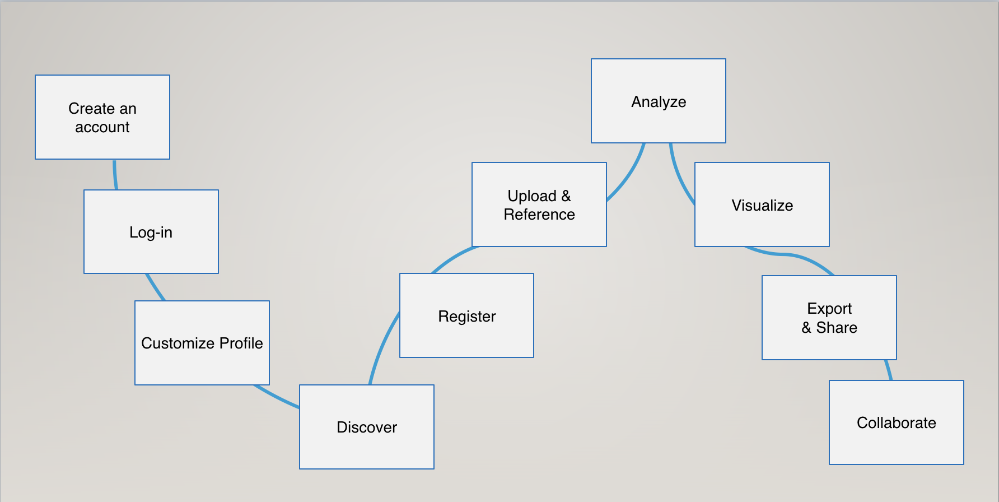
                    </div>
                    <p class="img_title">User journey</p>
                </div>
            </div>
        </div>

        <div class="design-process">
            <div class="design-process-row">
                <h2>Our Process</h2>
            </div>
            <div class="design-process-row">
                <div>
                    <p>Upon joining the project, it was already in the discovery phase. The team had completed the first round of user interviews and created detailed personas. A well-defined workflow was established, guiding our subsequent actions.</p>
                </div>
                <div>
                    <h3>User Interview</h3>
                    <p>In my role, I was responsible for the account management initiative. My initial tasks involved transcribing user interviews. Despite my limited prior experience in the data sector, this process helped me quickly grasp our users' daily challenges. Regular team meetings were instrumental in understanding the scope of the account management initiative.
                    </p>

                    <h4>Observations and Findings</h4>
                    <p>We continually refined the interview protocol, adjusted the flow and questions, and conducted a second round of user interviews. During this phase, my primary focus was on transcribing, data analysis, identifying user needs related to account management, and proposing potential solutions. Our team shared key findings at weekly touchpoint meetings, summarizing standout insights for designers.</p>
                    <div class="fsds-center">
                        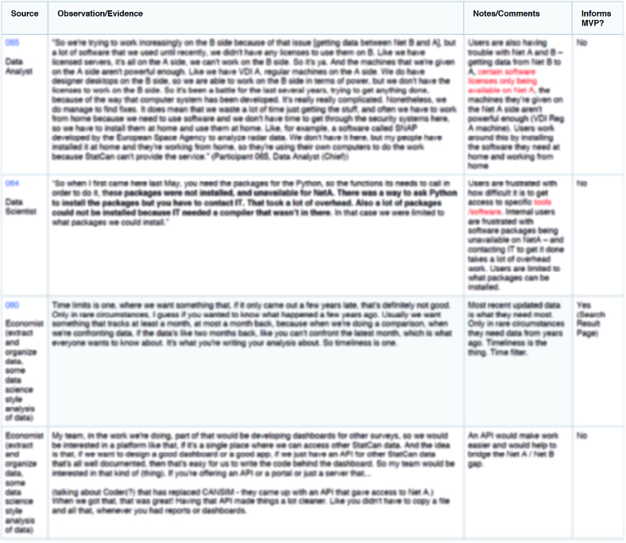
                    </div>
                    <p class="img_title">Some observations and findings (image intentionally obscured to protect privacy)</p>

                    <h3>Journey Map</h3>
                    <p>The team had already created journey maps for account management, including external/internal user access to confidential data, Public Use Microdata Files (PUMFs), and Real-Time Remote Analysis (RTRA). As we gathered more user insights, we recognized the need to update these maps. I collaborated with another researcher to incorporate new discoveries, ensuring the maps were comprehensive and accurate.</p>
                    <div class="fsds-center">
                        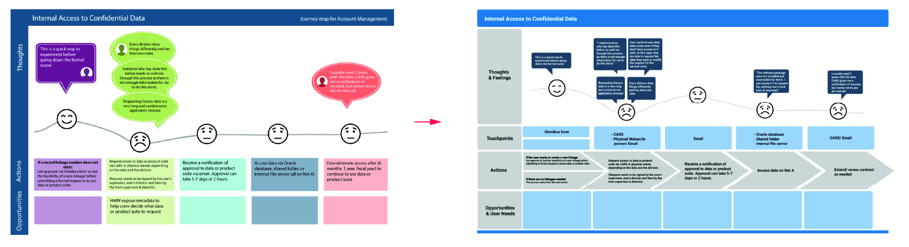
                    </div>
                    <p class="img_title">Internal user access confidential data old/new journey map</p>
                    <div class="fsds-center">
                        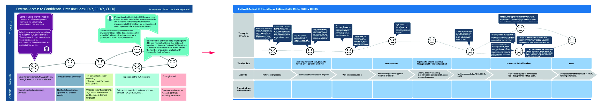
                    </div>
                    <p class="img_title">External user access confidential data old/new journey map</p>
                    <div class="fsds-center">
                        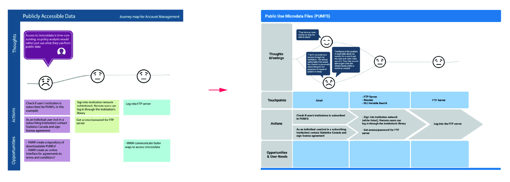
                    </div>
                    <p class="img_title">User access public data old/new journey map</p>
                    <div class="fsds-center">
                        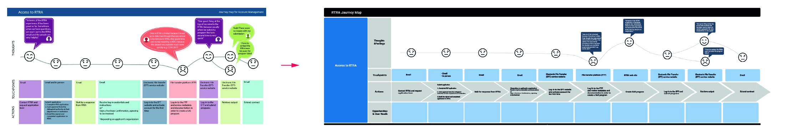
                    </div>
                    <p class="img_title">RTRA (Real time remote analysiz) old/new journey map</p>

                    <h4>Collaboration way in the User Journey</h4>
                    <p>In parallel with updating the journey maps, our team reconsidered how users collaborate at each phase of their data journey. We reorganized the entire user journey, from dataset discovery to sharing and exporting files</p>
                    <div class="fsds-center">
                        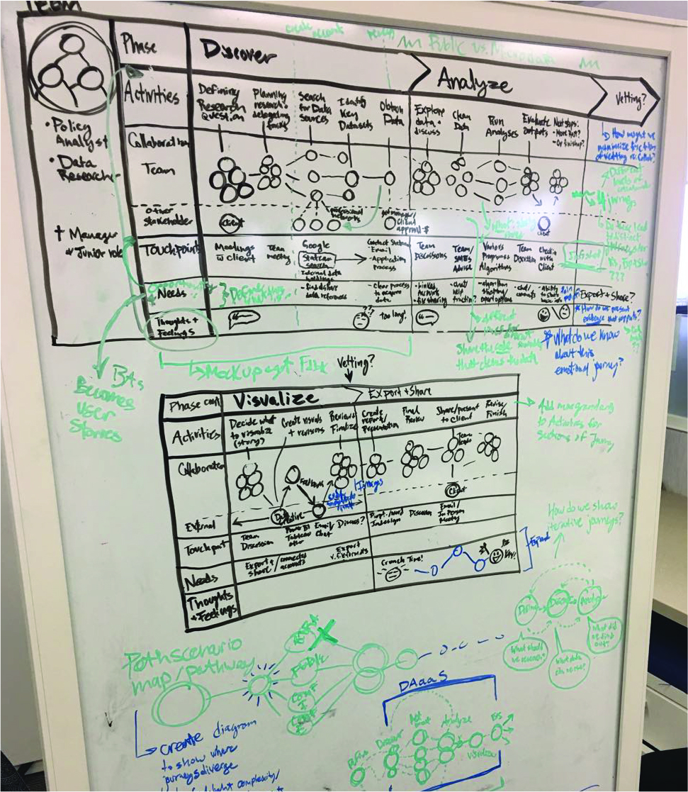
                    </div>
                    <p class="img_title">Visually represent collaboration through circles and lines</p>

                    <h3>ECCC Workshop</h3>
                    <p>Our team conducted a workshop with energy data users at the offices of Environment and Climate Change Canada (ECCC). My role involved note-taking, data collection during the workshop, which were later extracted to derive key findings.</p>

                    <h4>What Works Well and What Does Not</h4>
                    <p>In one activity, participants reflected on their data journey, noting both positive and negative experiences. They shared their thoughts behind each note, fostering deeper insights.</p>
                    <div class="fsds-center">
                        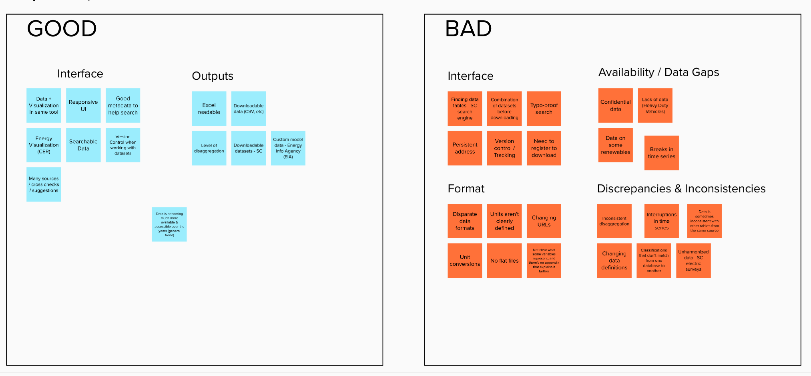
                    </div>
                    <p class="img_title">What works well and what does not</p>

                    <h4>Metadata Ranking Activity</h4>
                    <p>Participants ranked the importance of metadata when selecting datasets for their projects. They voted for the most critical pieces of information, helping us understand their decision-making priorities.</p>
                    <div class="fsds-center">
                        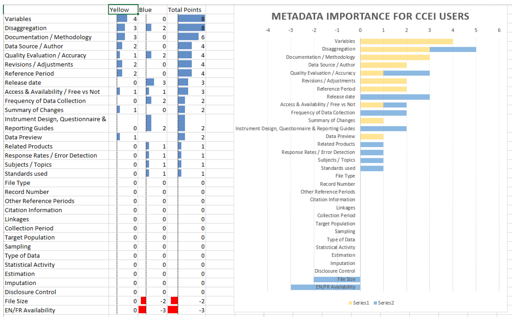
                    </div>
                    <p class="img_title">Outcome statistics of metadata ranking activity</p>

                    <h4>Key Findings</h4>
                    <div class="key-finding-quote">
                        <h4>Users want an intuitive and responsive user interface and improved search functionality, so that they can find what they need easily; they are excited about the idea of analysis and visualization tools in one place; and they want the ability to work collaboratively with confidential data.</h4>
                    </div>
                    <div class="key-finding-quote">
                        <h4>Their most notable pain points were with discrepancies & inconsistencies with StatCan data.</h4>
                    </div>
                    <div class="key-finding-quote">
                        <h4>Variables and disaggregation of a dataset are most important for these users.</h4>
                    </div>
                    <div class="key-finding-quote">
                        <h4>They repeatedly mentioned downloading data and file formats as key concerns (they seemed particularly interested in getting flat csv files)</h4>
                    </div>

                    <h4>Natural Resources Canada (NRCAN) & Environment and Climate Change Canada (ECCC)</h4>
                    <p>After the workshop, we integrated the data gathered from both the ECCC and the previous NRCAN workshops to uncover shared themes pertaining to StatsCan's data.</p>
                    <div class="fsds-center">
                        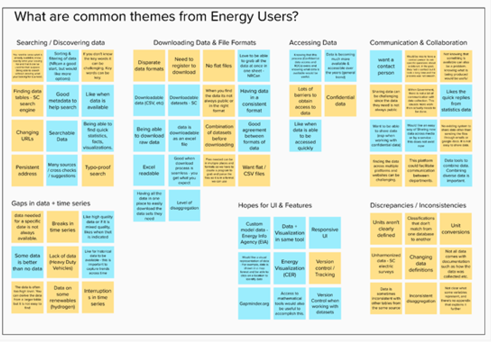
                    </div>
                    <p class="img_title">Combined feedback from group consultations with NRCAN & ECCC (blue = positive, yellow = negative)</p>

                    <h3>Mockups</h3>
                    <p>In addition to user research, I assisted the design team by creating mockups. One notable mockup was the content results page, which underwent revisions based on insights from user workshops.</p>
                    <div class="fsds-center">
                        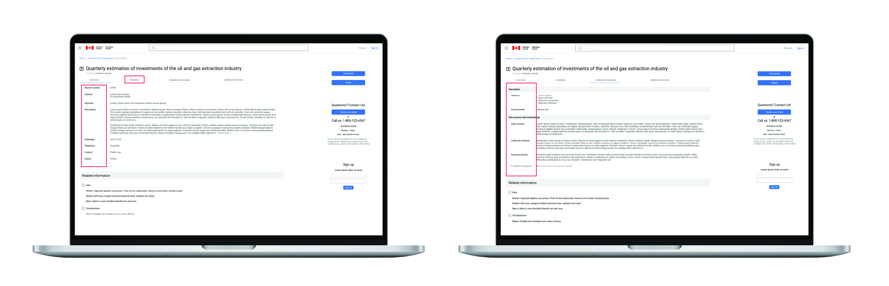
                    </div>
                    <p class="img_title">Content result page mock up</p>

                    <h3>Usability Testing</h3>
                    <p>Our interdisciplinary team, including researchers, designers, and developers, held weekly roundtable meetings to align our work. Designers provided mockups for usability testing, and I compiled insights for the landing page. These insights informed recommendations for designers to refine the mockups.</p>
                    <div class="fsds-center">
                        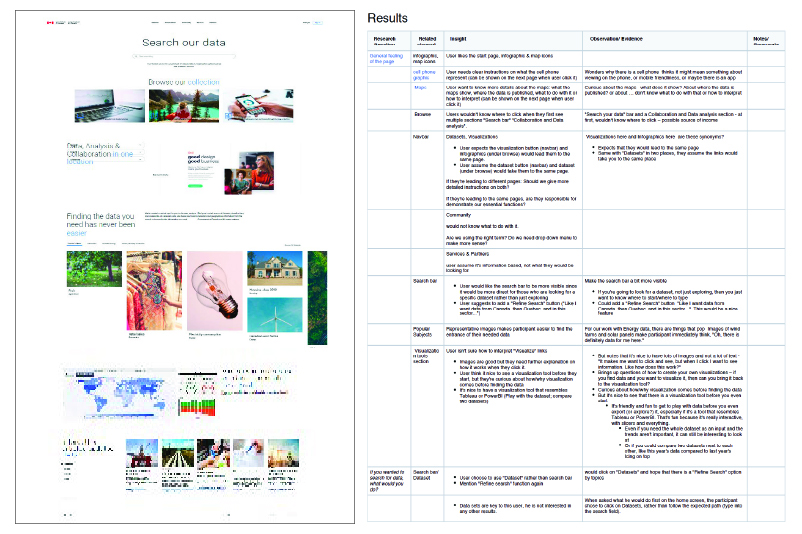
                    </div>
                    <p class="img_title">Testing results of landing page mockup (image intentionally obscured to protect privacy)</p>
                </div>
            </div>
            <!--            <div class="design-process-full-width">-->
            <!--                <div class="high-fi-wireframe">-->
            <!--                    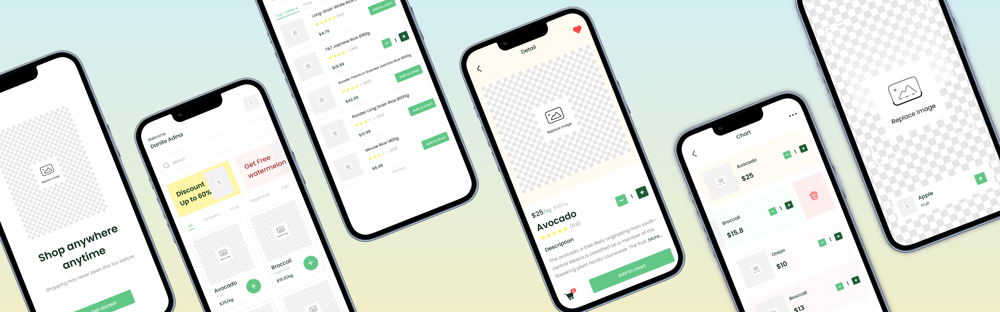-->
            <!--                </div>-->
            <!--            </div>-->
        </div>

        <div class="my-learning daaas">
            <div class="my-learning-row">
                <h2>My learning</h2>
                <p>This project has been an enriching journey that has expanded my horizons in the field of data analytics and user-centered design. Throughout the process, I've gained valuable insights and skills:</p>
                <ul>
                    <li><strong>User-Centric Approach: </strong>I learned the importance of placing the user at the core of every project. Conducting user interviews, observing their behaviors, and understanding their pain points has been pivotal in shaping our solutions.</li>
                    <li><strong>Effective Collaboration: </strong>Working with a multidisciplinary team of researchers, designers, and developers has taught me the value of collaboration. Regular communication and aligning our efforts ensured that our work remained focused and impactful.</li>
                    <li><strong>Data Integration: </strong>The process of merging data from different workshops and identifying common themes has enhanced my data integration and analysis skills. This experience was particularly valuable in understanding the broader context of our project.</li>
                    <li><strong>Iterative Design: </strong>The iterative design process, including usability testing and refining mockups, has shown me the power of iteration in creating user-friendly interfaces.</li>
                    <li><strong>Problem Solving: </strong>I've developed problem-solving skills by translating user needs into actionable solutions, especially when addressing complex data-related challenges.</li>
                    <li><strong>Flexibility and Adaptability: </strong>Adapting to the unfamiliar territory of data analytics and embracing complex concepts and terminology has demonstrated my ability to learn quickly and adapt to new domains.</li>
                    <li><strong>Presentation and Communication: </strong>Regular touchpoint meetings and presenting findings to the team and stakeholders have improved my presentation and communication skills, allowing me to convey complex ideas effectively.</li>
                </ul>
            </div>
        </div>


        <!--            <div class="col-sm-4 col-md-4 portfolio-block">-->
        <!--                &lt;!&ndash; Project Description &ndash;&gt;-->
        <!--                <div class="project-description">-->
        <!--                    <div class="block-title">-->
        <!--                        <h3>Description</h3>-->
        <!--                    </div>-->
        <!--                    <ul class="project-general-info">-->
        <!--                        <li><p><i class="lnr lnr-user"></i> Alex Smith</p></li>-->
        <!--                        <li><p><i class="lnr lnr-link"></i> <a href="#" target="_blank">www.project-site.com</a></p></li>-->
        <!--                        <li><p><i class="lnr lnr-calendar-full"></i> 25 april, 2021</p></li>-->
        <!--                    </ul>-->

        <!--                    <p class="text-justify">Aliquam euismod aliquam massa, quis eleifend dui sodales vitae. Interdum et malesuada fames ac ante ipsum primis in faucibus.</p>-->
        <!--                    &lt;!&ndash; /Project Description &ndash;&gt;-->

        <!--                    &lt;!&ndash; Technology &ndash;&gt;-->
        <!--                    <div class="tags-block">-->
        <!--                        <div class="block-title">-->
        <!--                            <h3>Technology</h3>-->
        <!--                        </div>-->
        <!--                        <ul class="tags">-->
        <!--                            <li><a>HTML5</a></li>-->
        <!--                            <li><a>CSS3</a></li>-->
        <!--                            <li><a>jQuery</a></li>-->
        <!--                            <li><a>Ajax</a></li>-->
        <!--                            <li><a>PHP5</a></li>-->
        <!--                        </ul>-->
        <!--                    </div>-->
        <!--                    &lt;!&ndash; /Technology &ndash;&gt;-->

        <!--                    &lt;!&ndash; Share Buttons &ndash;&gt;-->
        <!--                    <div class="share-buttons">-->
        <!--                        <div class="block-title">-->
        <!--                            <h3>Share</h3>-->
        <!--                        </div>-->
        <!--                        <div class="share-buttons-block">-->
        <!--                            <a href="#" target="_blank" class="btn"><i class="fab fa-facebook-f"></i> </a>-->
        <!--                            <a href="#" target="_blank" class="btn"><i class="fab fa-twitter"></i> </a>-->
        <!--                            <a href="#" target="_blank" class="btn"><i class="fab fa-dribbble"></i> </a>-->
        <!--                        </div>-->
        <!--                    </div>-->
        <!--                    &lt;!&ndash; /Share Buttons &ndash;&gt;-->
        <!--                </div>-->
        <!--                &lt;!&ndash; Project Description &ndash;&gt;-->
        <!--            </div>-->

        <div class="project-page-footer">
            <p>© 2023 Yumao Chen</p>
        </div>
    </div>
</div></div>